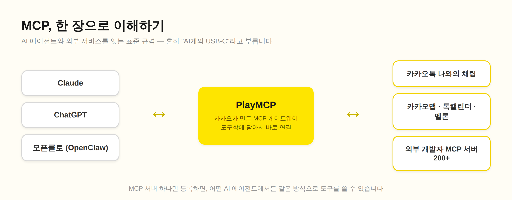
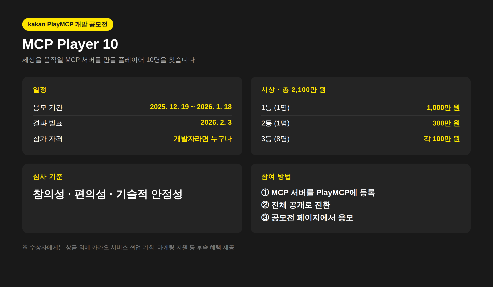

요즘 개발자 커뮤니티에서 MCP 얘기가 안 나오는 날이 없는 것 같아요. 작년까지만 해도 "그거 클로드에서만 쓰는 거 아니야?" 하는 반응이 많았는데, 카카오가 PlayMCP를 내놓으면서 분위기가 확 바뀌었습니다.
저는 카카오 앰배서더로 활동하면서 카나나 모델로 이것저것 만들어보고 있는데요. 그 과정에서 PlayMCP도 꽤 오래 들여다봤습니다. 오늘은 PlayMCP가 뭔지, 그리고 지난겨울 카카오가 열었던 개발 공모전 MCP Player 10은 어떤 행사였는지 정리해보려고 해요.
MCP(Model Context Protocol)는 AI 에이전트가 외부 서비스를 다룰 수 있게 해주는 표준 규격입니다. 2024년 11월에 Anthropic이 오픈소스로 공개했고, 지금은 사실상 업계 표준처럼 자리 잡았죠.
비유하자면 USB-C 같은 거예요. 예전에는 기기마다 충전 단자가 달라서 케이블을 주렁주렁 들고 다녔는데, 지금은 하나로 다 되잖아요. MCP도 마찬가지입니다. 서비스마다 제각각인 API를 AI가 일일이 배우는 게 아니라, MCP라는 공통 규격으로 서버를 한 번만 만들어두면 Claude든 ChatGPT든 어떤 에이전트에서든 그 도구를 쓸 수 있게 됩니다.

PlayMCP는 카카오가 2025년 7월 31일에 베타 오픈한 MCP 개방형 플랫폼입니다. 국내에서는 첫 시도였어요. 카카오 계정으로 로그인하면 이런 것들을 할 수 있습니다.
처음 등록하면 임시 등록 상태라 혼자만 테스트할 수 있고, 전체 공개로 전환하면 다른 사용자들도 내 서버를 쓸 수 있게 되는 구조예요. 지금은 외부 개발자들이 올린 MCP 서버만 200개가 넘습니다.
[이미지 자리] playmcp.kakao.com 메인 화면 캡처를 여기에 넣어주세요
재미있는 건 사용 통계인데요. 베타 오픈 직후인 작년 8월 기준으로 서버 호출 수 1위가 카카오톡 나와의 채팅이었다고 해요. 그 뒤로 카카오맵, 학교 급식 정보, 날씨 조회, 멜론 순이었고요. 사람들이 AI한테 제일 먼저 시킨 일이 결국 "필요한 정보 모아서 카톡으로 보내줘"였다는 게 어쩐지 되게 한국적이지 않나요? ㅋㅋ
솔직히 베타 초기에는 아쉽다는 반응도 적지 않았습니다. 도구 종류도 적었고 안정성도 들쭉날쭉했거든요. 저도 처음 만져봤을 때는 "방향은 맞는데 아직 갈 길이 머네" 정도의 인상이었어요. 그런데 그 뒤로 업데이트가 꾸준히 쌓였습니다. 도구함 기능이 붙으면서 여러 MCP를 조합해 쓰기 편해졌고, 올해 5월에는 오픈소스 AI 에이전트인 오픈클로(OpenClaw) 연동까지 지원하기 시작했어요.
오픈클로 연동은 방식이 꽤 깔끔합니다. 도구함에서 연결 프롬프트를 생성해서 오픈클로 채팅창에 붙여넣으면 나머지 연결 과정은 에이전트가 알아서 처리하고, 인증에는 발급 후 10분만 유효한 원타임 토큰을 써서 인증 정보 노출을 막았어요. 연동해두면 "매일 아침 9시마다 급식 메뉴 알려줘" 같은 지시를 자연어로 던져놓는 것만으로 에이전트가 매일 알아서 MCP 서버를 호출해줍니다.
[이미지 자리] PlayMCP 도구함 화면 캡처를 여기에 넣어주세요
플랫폼을 열어놨으니 다음 수순은 개발자 모으기겠죠. 카카오는 작년 12월 19일에 PlayMCP 개발 공모전 MCP Player 10을 열었습니다. 이름 그대로 "세상을 움직일 MCP 서버를 만들 플레이어 10명"을 찾는 대회였어요.

핵심만 추리면 이렇습니다.
참여 방법이 인상적이었는데, 별도의 지원서나 발표 자료가 없었습니다. 자기가 만든 MCP 서버를 PlayMCP에 양식대로 등록하고, 전체 공개로 전환한 다음, 공모전 페이지에서 응모 버튼을 누르면 끝. 심사도 실제로 플랫폼에 올라가 돌아가는 서버를 놓고 진행됐어요. 그러니까 "기획서 잘 쓰는 사람"이 아니라 "진짜 돌아가는 물건을 만든 사람"을 뽑겠다는 거죠.
상금도 상금이지만, 개인적으로는 수상자에게 주어지는 후속 혜택이 더 크다고 봤습니다. 카카오 서비스와의 협업 기회, 마케팅 지원 같은 것들이요. 혼자 만든 MCP 서버가 카카오라는 유통 채널을 타고 수천만 명 규모의 사용자와 만날 수 있는 길이 열리는 거니까요. 개인 개발자 입장에서 이런 기회는 흔치 않죠.
저는 요즘 카나나 API로 한국 생활 장면을 사진과 음성으로 설명해주는 데모를 만들고 있는데요. 이런 걸 만들다 보면 결국 "이 기능을 사용자가 어디서 쓰게 할 건가"라는 고민에 부딪힙니다. 웹 데모야 만들면 그만이지만, 사람들이 매일 여는 건 결국 카톡이잖아요. PlayMCP가 노리는 지점이 정확히 거기라고 생각해요. AI 기능을 따로 앱으로 배포하는 게 아니라, 이미 다들 쓰고 있는 카카오 서비스에 꽂아 넣는 것.
MCP 서버 만드는 것 자체는 생각보다 진입장벽이 낮습니다. 공식 SDK 문서 보고 도구 몇 개 정의하면 기본 골격은 하루면 나와요. 어려운 건 오히려 "뭘 만들 것인가"쪽인데, MCP Player 10의 심사 기준이 창의성을 제일 앞에 둔 것도 같은 맥락이겠죠. 기술은 이미 평준화됐고, 아이디어 싸움이라는 얘기입니다.
이번 공모전 응모는 이미 마감됐지만, PlayMCP 자체는 지금도 계속 서버를 받고 있습니다. 오픈클로 연동처럼 굵직한 업데이트가 계속 나오는 걸 보면 카카오가 이 판을 꽤 진지하게 키우는 것 같고요. 다음 시즌이 열린다면 그때 "이미 서버 올려서 운영해본 사람"과 "이제 시작하는 사람"의 격차는 분명히 있을 거예요. 관심 있으신 분들은 미리 하나 올려서 굴려보시는 걸 추천합니다.
* 이 글은 카카오 앰배서더 활동의 일환으로 작성했습니다. 내용은 공개된 자료와 직접 사용해본 경험을 바탕으로 정리했어요.